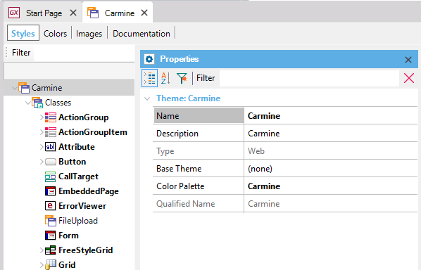

The properties of a Theme are as follows:  NameIt is the name of the physical file corresponding to the Theme (or Template if you save it through "Save as template...;" in this case, one file called theme.css would be saved in the KB folder). If you change this property in a GeneXus theme installed by default, another theme will be created (with the new name) and the original GeneXus theme will be unselected and removed from the KB. If you need to use this theme again, you have to select it and GeneXus will re-import it. DescriptionA functional description of the Theme. TypeRead-only property. Base Theme
Colo Palette
Qualified NameRead-only property. Note: GeneXus IDE remembers all the Properties dialog expanded nodes and the last property selected to show them every time the Theme object is opened.
|